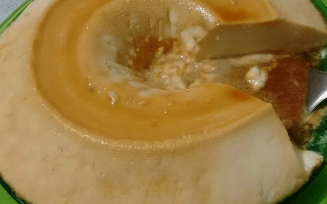
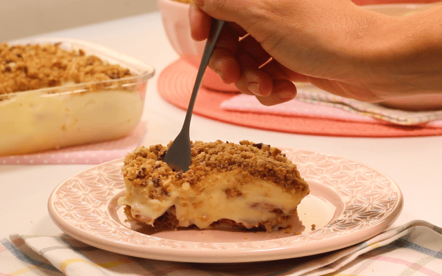
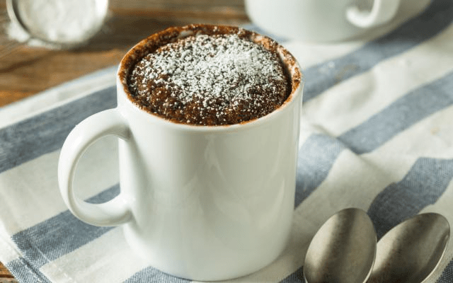

Pudim
- 1 lata de leite condensado
- 1 caixinha de creme de leite
- 1 xícara de chá de leite
- 1 pacote de gelatina sem sabor
- 3 colheres de sopa de açúcar
Hidrate a gelatina e dissolva no leite. Num liquidificador bata os igredientes e forme uma mistura homogênea. Em uma fôrma coloque o açúcar e mexa bem até dissolver e formar uma calda, unte a forma, Coloque a mistura Leve ao freezer por 1 hora, desenforme e sirva.
Sobremesa 3 ingredientes
- 2 caixas de leite condensado
- 100 ml de suco de limão
- 3 pacotes de biscoito cookie
Junte o leite condensado com o suco de limão. Misture bem, triture 1 pacote de biscoito tipo cookie, Em uma forma, coloque no fundo a misture de leite condensado e logo após uma camada de biscoito, Faça camadas alternadas, finalize com o biscoito triturado e leve à geladeira até gelar.
Brownie de micro-ondas
- 4 colheres de manteiga
- 4 colheres de leite
- 4 colheres de achocolatado
- 4 colheres de leite condensado
- 4 colheres de farinha de trigo
- 1 pitada de sal
Misture tudo delicadamente em um recipiente que possa ir para o micro-ondas. Leve para o micro-ondas por 2 minutos e fique atento. Se precisar, coloque mais 1 minuto.